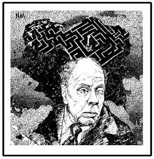

This page is dedicated to imagery surrounding the short story that has been produced to depict the story of the Garden of Forking paths.
An interpretation of "The Garden of Forking Paths" 
An image of the author, Jorge Luis Borges.